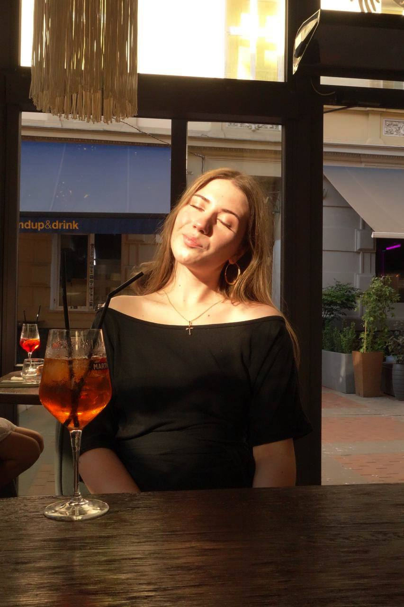
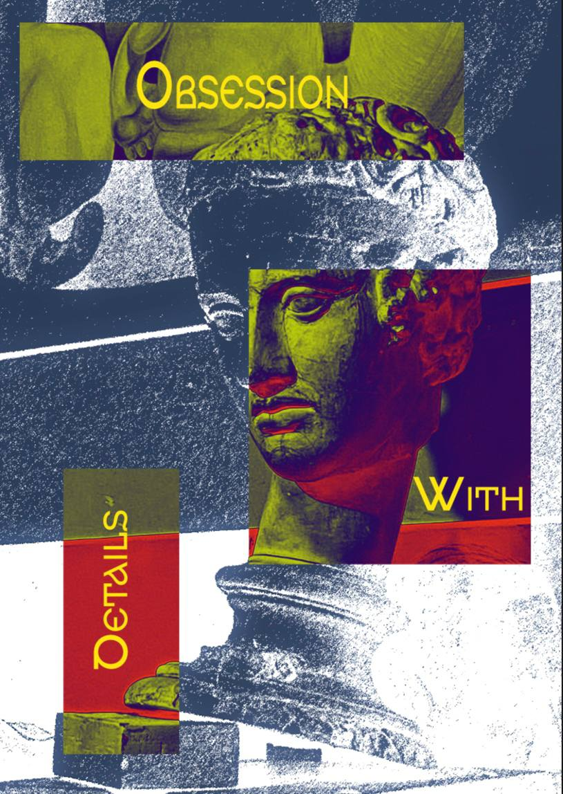
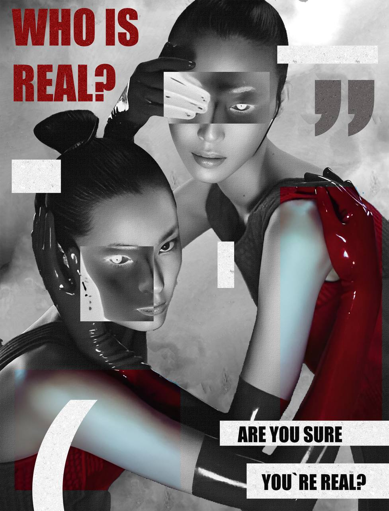
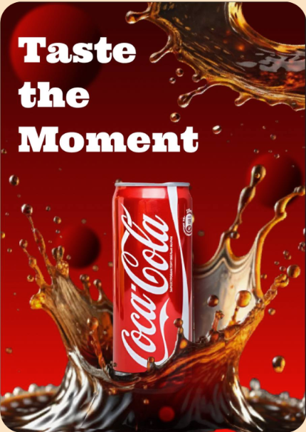
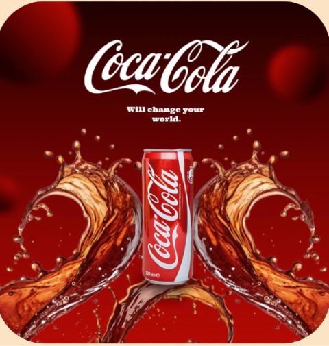

Svidzinska
Anastasia
ПРО СЕБЕ
Мене звати Анастасія, мені 18 років. Я навчаюся на графічному дизайні у Львівському фаховому коледжі декоративного і ужиткового мистецтва ім. І. Труша. Працюю з Adobe Photoshop, Illustrator та InDesign, а також постійно освоюю нові інструменти й напрямки у дизайні. Люблю створювати цікаві та креативні візуальні рішення, експериментувати зі стилями й перетворювати ідеї на готові дизайн-проєкти.

МІЙ ШЛЯХ
З самого дитинства творчості мені не бракувало — це було для мене і грою, і чимось, що ну дуже подобалося. А вже після 9 класу я зрозуміла, що хочу пов’язати з цим своє життя, тому вирішила йти далі.


Спершу були репетитори, а потім курси, багато практики і бажання привели мене до коледжу. Тож тепер я створюю те про що так мріяла.

ПОРТФОЛІО





